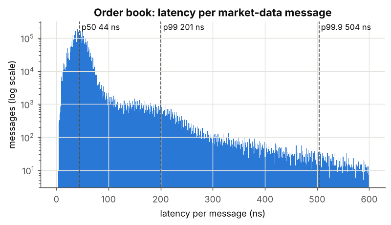
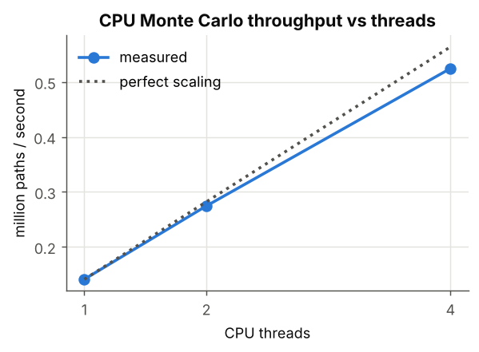
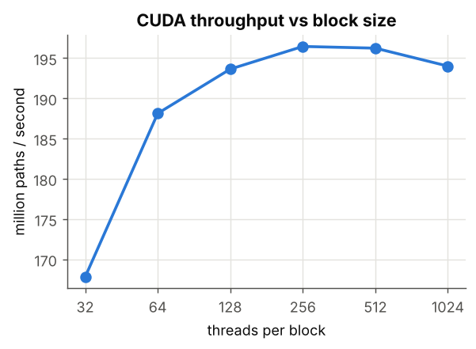
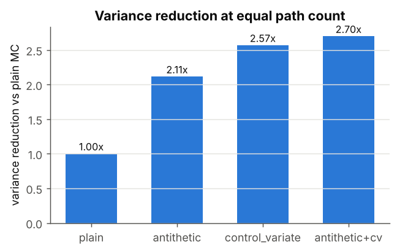
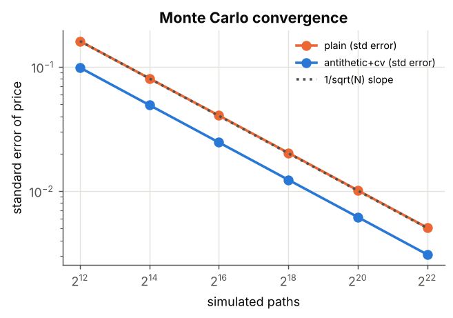
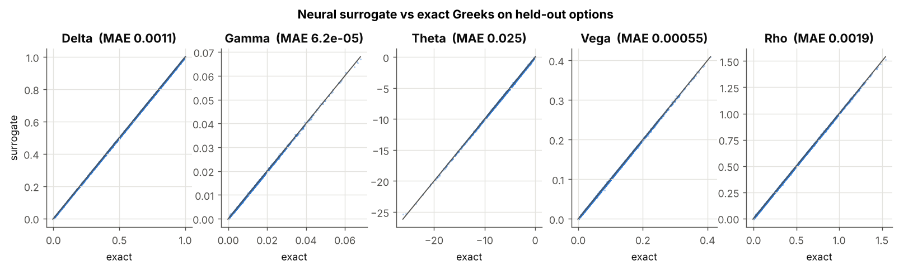
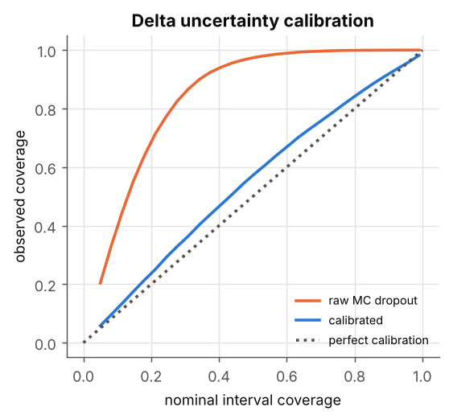
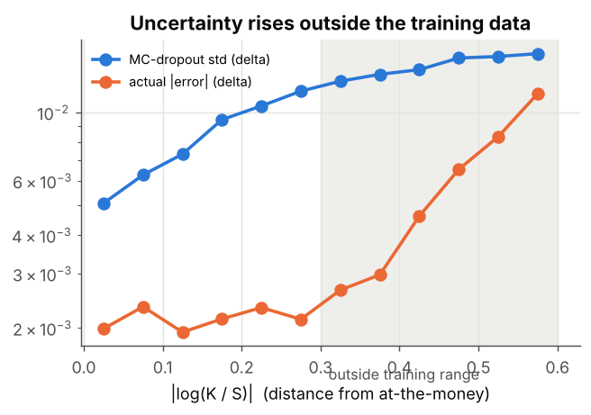
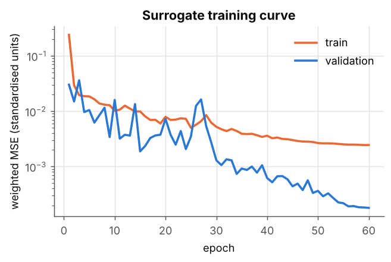

Every number on this page was measured by the code in benchmarks/ and python/; nothing is typed in by hand.
| p50 / p99 / p99.9 latency | 44 / 201 / 504 ns |
| throughput (1 thread) | 39.1 M msg/s |
| best bid/ask read | 2.4 ns |
| 4M paths x 256 steps, float | 21.3 ms (196 M paths/s), price 8.9320 ± 0.0031 |
| 4M paths x 256 steps, double | 648.7 ms (6 M paths/s), price 8.9312 ± 0.0031 |
| path storage registers_only | 0.66 ms |
| path storage SoA | 0.74 ms, 181 GB/s |
| path storage AoS | 33.52 ms, 4 GB/s |
| Delta MAE | 0.001113 |
| Gamma MAE | 6.198e-05 |
| Theta MAE | 0.02486 |
| Vega MAE | 0.0005466 |
| Rho MAE | 0.001859 |
| surrogate, 1 option | 504 µs |
| surrogate, batched | 6.11 µs / option |
| MC bump Greeks | 611 ms (9 runs x 65,536 paths x 128 steps, backend=cpu) |
| speedup (batched / single) | 99,934x / 1,212x |
| 95% coverage, delta (calibrated) | 95.2% |








